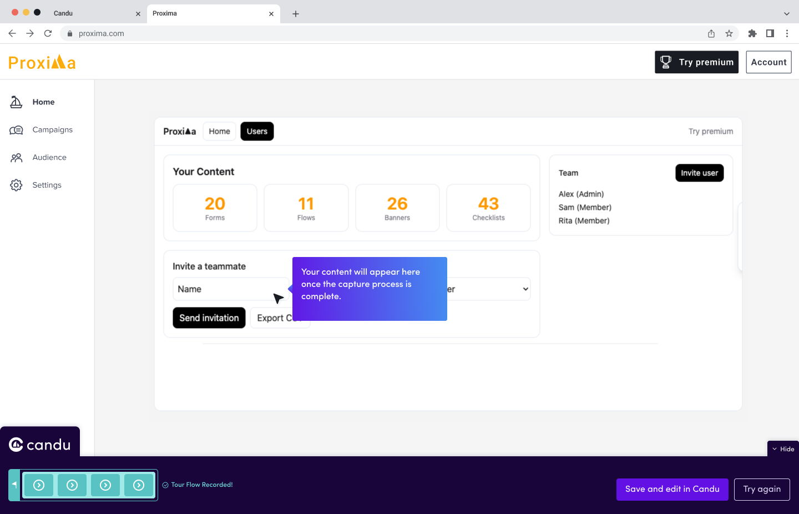
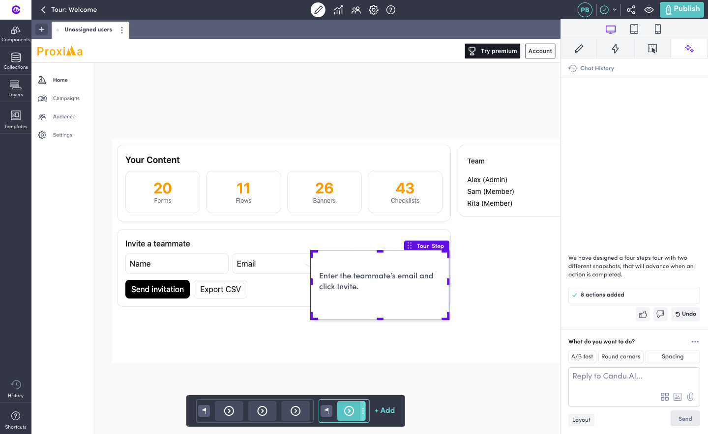

Case study · No-code editor
Cutting a 30–60 minute manual workflow down to under 10.
Candu is a live, shipping no-code editor for building in-product tours and banners. I founded its design system from scratch, left for another role, then came back to lead its move into AI-assisted creation, most visibly with Recording Session: a Chrome extension that turns a manual, step-by-step tour build into a single recorded flow the AI drafts and the user approves.
The problem
Building one tour meant 30–60 minutes of manual setup, every time.
Candu's users are non-technical marketers and product teams building in-product tours and banners without writing code. Before Recording Session, creating a tour meant building each step individually: connecting it to a placement, defining the target URL, writing the content, and styling every step's look and feel by hand. A simple 5-step tour took 30 to 60 minutes, done by people who are not designers and often just want to ship a quick walkthrough.
Research here didn't come from a large quantitative study. Candu is a B2B power-user product with a small number of people creating content for many end users, so the signal came from user interviews, support tickets, CX feedback, and in-product usage patterns, like which editor components got used most, which also fed a separate palette-restructuring project. That's a different research mode from a consumer product's funnel numbers, and just as valid.
The solution
Record the flow once. Let AI draft the tour. Review before it goes live.
Recording Session is a Chrome extension that captures a real flow as the user performs it once in their own product. The AI-powered capture identifies each meaningful interaction as it happens, with visual feedback (a countdown, step indicators, a halo effect on captured elements), then generates the tour steps automatically: titles, copy, selectors, and screenshots pulled straight from the recording.

The user lands in the editor with a real draft already built: steps positioned on the actual product, copy already written, ready to fine-tune.

The interactive walkthrough below simulates that same flow end to end, so you can click through it yourself.
This is a simplified simulation built to demonstrate how the flow works, not a pixel-accurate recreation of Candu's UI. The two screens above are the real designs it's based on.
AI drafts the tour, but nothing publishes automatically. The user reviews the AI-generated copy and structure on the real product and approves before anything goes live. It's a deliberate quality gate, so the speed gain doesn't come at the cost of quality.
Outcome
Live in production, and part of a larger design-system migration.
Recording Session is live in production today. Power-user feedback has been directionally positive, though at Candu's size there's no dedicated team tracking that at the level of individual tickets or quotes, a real constraint of running a small, lean team. Alongside this flagship flow, I also led the migration of Candu's design system to a tokenized framework, standardizing UI across the internal tools and the newer AI agent surfaces.
I design this work, and run Candu's broader design documentation and process, working with Claude Code as a collaborator. The human-in-the-loop pattern in Recording Session mirrors how I actually work day to day.
candu.ai →